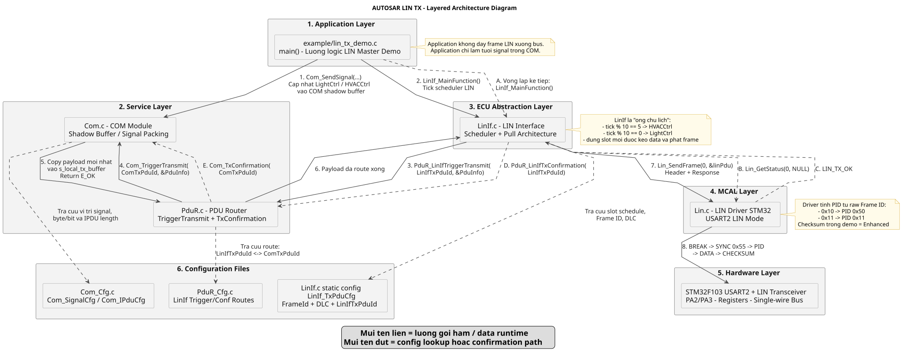
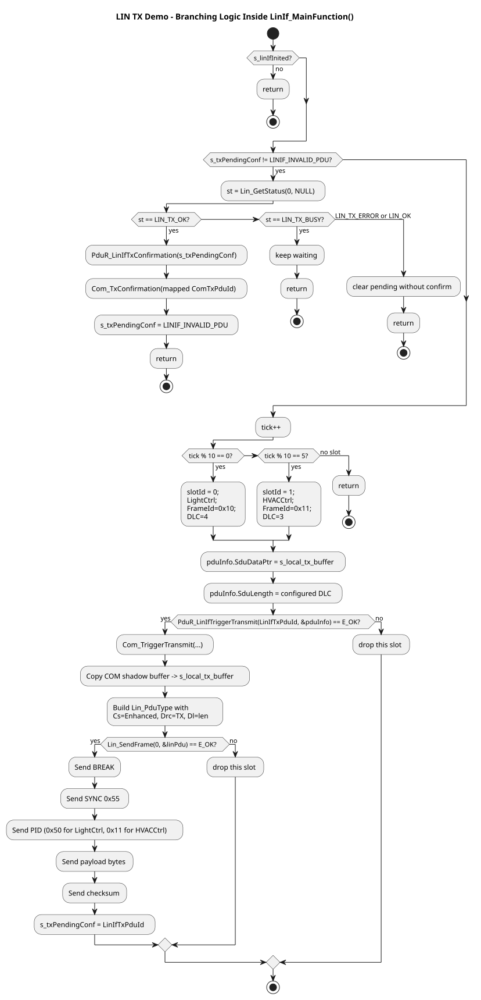

main() đến LIN Bus, rồi quay ngược lại đường xác nhận truyềnTài liệu này bám sát đúng code demo trong repository hiện tại. Mục tiêu không chỉ là mô tả “có các lớp AUTOSAR”, mà là chỉ rõ dữ liệu đang nằm ở đâu, ai gọi ai, tại sao LIN dùng Pull theo lịch, và cuối cùng chuỗi byte nào thực sự đi ra
USART2.
COM shadow buffer. Đến đúng slot, LinIf mới kéo payload mới nhất qua PduR -> Com, đóng gói thành Lin_PduType, rồi yêu cầu Lin phát ra USART2.
main() đến USART2Sau khi học xong tài liệu này, người học cần trả lời được các câu hỏi sau mà không còn mơ hồ:
Com_SendSignal() xong là frame lập tức lên bus”?0x10, 0x11) và Protected Identifier - PID trên wire (0x50, 0x11) là gì?Com, PduR, LinIf và Lin khác nhau ở chỗ nào?TxConfirmation ở vòng lặp kế tiếp, dù hàm driver đang gửi theo kiểu blocking?USART1 trong demo dùng để làm gì, và USART2 mới là ngoại vi LIN thật sự ở đâu?Application update signal -> COM shadow buffer -> LinIf scheduler -> PduR_LinIfTriggerTransmit -> Com_TriggerTransmit -> LinIf local TX buffer -> Lin_SendFrame -> USART2 -> LIN transceiver -> LIN bus
LIN (Local Interconnect Network) là mạng truyền thông chi phí thấp cho các chức năng thân xe hoặc tải chậm như đèn, gương, kính, khóa cửa, HVAC. So với CAN, LIN đơn giản hơn nhiều nhưng đánh đổi bằng tốc độ thấp hơn và cơ chế truy cập bus kém linh hoạt hơn.
| Đặc tính | LIN | Ý nghĩa trong demo |
|---|---|---|
| Cấu trúc bus | Master-Slave | LinIf đóng vai trò bộ điều phối lịch phát của master. |
| Cơ chế truy cập bus | Time-triggered theo Schedule Table | Không có chuyện ứng dụng tự giành quyền phát frame bất cứ lúc nào. |
| Tầng vật lý | Single-wire LIN bus thông qua LIN transceiver | USART2 chỉ là nguồn phát byte nối tiếp; muốn lên bus ô tô thật cần transceiver. |
| Tốc độ | Thường 19.2 kbps | Code demo cấu hình USART2 ở 19200 baud. |
| Khung dữ liệu | Break + Sync + PID + Data + Checksum | Lin_SendFrame() là nơi tạo ra chuỗi byte/bit này. |
| Trường | Kích thước | Ai phát | Ý nghĩa |
|---|---|---|---|
| Break | ≥ 13 bit dominant | Master | Đánh dấu bắt đầu frame mới, đánh thức mọi slave đang chờ header. |
| Sync | 1 byte (0x55) |
Master | Giúp slave đồng bộ baud rate theo timing của master. |
| PID | 1 byte | Master | Gồm 6 bit ID và 2 bit parity để bảo vệ header. |
| Data | 1..8 byte | Master hoặc Slave | Payload thực tế. Demo này dùng kiểu master phát response. |
| Checksum | 1 byte | Bên phát response | Bảo vệ payload, dùng Enhanced Checksum trong demo. |
| Loại frame | Bản chất | Demo này có dùng không |
|---|---|---|
| Unconditional frame | Frame cố định theo lịch, slot nào đến thì phát frame đó. | Có. Toàn bộ demo đang mô phỏng kiểu này. |
| Sporadic frame | Master chỉ phát nếu có dữ liệu nào đó đang chờ. | Không. |
| Event-triggered frame | Master phát header để một slave phù hợp phản hồi. | Không. |
| Diagnostic frame | Dùng cho chẩn đoán, ví dụ 0x3C/0x3D. |
Không ở luồng TX chính, nhưng driver có hỗ trợ sleep/wakeup kiểu diagnostic. |
Trong MCU STM32, USART2 được dùng như một khối phát/thu nối tiếp có hỗ trợ LIN mode để tạo break field và đồng bộ hóa. Tuy nhiên về mặt điện ô tô, bus LIN thật là một đường dây single-wire có mức điện áp và đặc tính vật lý riêng. Nói gọn:
USART2 là nơi phát chuỗi byte.USART2; đó là cửa sổ quan sát rất gần với bus, nhưng chưa phải toàn bộ câu chuyện vật lý ngoài xe.| Khía cạnh | CAN điển hình | LIN Master điển hình |
|---|---|---|
| Khi nào frame được phát | Khi upper layer muốn gửi và lower layer chấp nhận | Khi lịch của master cho phép |
| Ai quyết định thứ tự lên bus | Arbitration trên bus | Master scheduler |
| Mô hình AUTOSAR thường thấy | Push từ COM xuống CanIf/Can | Pull từ LinIf lên COM tại đúng slot |
| Ý nghĩa | Frame có thể phát gần ngay sau khi dữ liệu sẵn sàng | Dữ liệu có thể chờ trong buffer cho tới khi slot đến |
Com_SendSignal() trong demo không đẩy dữ liệu ra bus. Hàm này chỉ ghi vào shadow buffer của COM. Bus chỉ hoạt động khi LinIf_MainFunction() tới slot và gọi PduR_LinIfTriggerTransmit().
Application
-> Com_SendSignal(...) // cập nhật signal mới nhất
-> LinIf_MainFunction() // scheduler được gọi định kỳ
-> PduR_LinIfTriggerTransmit(...)
-> Com_TriggerTransmit(...)
-> copy COM shadow buffer sang buffer cục bộ của LinIf
-> Lin_SendFrame(...)
-> USART2 phát Break, Sync, PID, Data, Checksum
Trong code vẫn có đường Com_TriggerIPDUSend() -> PduR_ComTransmit() -> LinIf_Transmit(). Tuy nhiên file LinIf.c cố ý để LinIf_Transmit() trả về E_NOT_OK cho luồng demo unconditional frame. Mục đích là ép logic theo đúng mô hình pull do scheduler làm chủ.
| Lớp (Layer) | File thực tế | Nhiệm vụ chính trong demo LIN TX |
|---|---|---|
| Application | example/lin_tx_demo.c |
Khởi tạo hệ thống, cập nhật signal vào COM buffer, gọi LinIf_MainFunction() mỗi vòng lặp. |
| Service | autosar/com/Com.c |
Chứa shadow buffer cho từng I-PDU và pack signal vào đúng byte/bit. |
| Service | autosar/pdur/PduR.c |
Route lời gọi TriggerTransmit và TxConfirmation giữa LinIf với Com. |
| ECU Abstraction | autosar/linif/LinIf.c |
Giữ lịch phát, chọn slot, kéo payload từ COM, tạo Lin_PduType, xử lý confirmation. |
| MCAL | autosar/lin/Lin.c |
Cấu hình USART2, tính PID và checksum, phát break/sync/data ra ngoại vi. |
| Signal | COM I-PDU | Pack trong COM | LinIfTxPduId | Frame ID thô | PID trên wire | DLC |
|---|---|---|---|---|---|---|
ComSig_Light_Headlamp |
ComConf_ComIPdu_LightCtrl = 3 |
byte0.bit0 |
0 |
0x10 |
0x50 |
4 |
ComSig_Light_DRL |
byte0.bit1 |
|||||
ComSig_Light_Brightness |
byte1 |
|||||
ComSig_HVAC_FanSpeed |
ComConf_ComIPdu_HVACCtrl = 4 |
byte0 |
1 |
0x11 |
0x11 |
3 |
| Khối cấu hình | Thông tin quan trọng |
|---|---|
config/PduR_Cfg.c |
ComConf_ComIPdu_LightCtrl (3) -> LinIfTxPduId 0, ComConf_ComIPdu_HVACCtrl (4) -> LinIfTxPduId 1 |
autosar/linif/LinIf.c |
LinIfTxPduId 0 -> Frame ID 0x10, DLC 4, LinIfTxPduId 1 -> Frame ID 0x11, DLC 3 |
LinIf_MainFunction() |
tick % 10 == 0 phát LightCtrl, tick % 10 == 5 phát HVACCtrl |
Lin_PduType, trường có tên Pid, nhưng ở demo hiện tại LinIf lại gán vào đó raw frame ID (0x10 hoặc 0x11). Sau đó Lin_SendFrame() mới gọi hàm tính parity để biến nó thành Protected Identifier thật sự trên wire.
main() đến USART2Khởi tạo trong demo xảy ra theo đúng thứ tự sau:
int main(void)
{
Log_Init(); // USART1 chỉ dùng log debug
BSW_Init_LIN_Only(); // LinIf_Init -> PduR_Init -> Com_Init
while (1) {
Demo_LIN_LightCtrl();
Demo_LIN_HVACCtrl();
LinIf_MainFunction();
delay_ms(100u);
}
}Log_Init() cấu hình USART1 để in log chữ ra terminal.LinIf_Init() gọi Lin_Init(), và chính Lin_Init() mới cấu hình USART2 cho LIN mode.PduR_Init() bật route table.Com_Init() xóa toàn bộ shadow buffer về 0.Mỗi vòng lặp, ứng dụng cập nhật dữ liệu điều khiển đèn và HVAC qua Com_SendSignal(). Hàm này chỉ pack dữ liệu vào đúng byte/bit trong Com_IpduBuf:
Headlamp ghi vào LightCtrl.byte0.bit0.DRL ghi vào LightCtrl.byte0.bit1.Brightness ghi vào LightCtrl.byte1.FanSpeed ghi vào HVACCtrl.byte0.LinIf chưa chạm đúng slot.
LinIf_MainFunction()Đây là trái tim của demo. Pseudocode rút gọn nhưng đúng bản chất runtime như sau:
if (!s_linIfInited) return;
if (s_txPendingConf != LINIF_INVALID_PDU) {
st = Lin_GetStatus(0, NULL);
if (st == LIN_TX_OK) {
PduR_LinIfTxConfirmation(s_txPendingConf);
s_txPendingConf = LINIF_INVALID_PDU;
} else if (st == LIN_TX_ERROR || st == LIN_OK) {
s_txPendingConf = LINIF_INVALID_PDU;
}
return;
}
tick++;
if (tick % 10 == 0) slot = LightCtrl;
else if (tick % 10 == 5) slot = HVACCtrl;
else return;
PduR_LinIfTriggerTransmit(...);
Lin_SendFrame(...);
s_txPendingConf = currentSlot;Ý nghĩa của từng nhánh:
| Nhánh | Điều kiện | Ý nghĩa hệ thống |
|---|---|---|
| Chưa init | !s_linIfInited |
Bảo vệ module chưa sẵn sàng. |
| Pending confirmation | s_txPendingConf != 255 |
Không schedule frame mới, chỉ kiểm tra frame trước đã hoàn tất hay chưa. |
| Không có slot | tick % 10 không phải 0 hoặc 5 |
Không phát gì trong vòng này. |
| Slot HVAC | tick % 10 == 5 |
Kéo payload HVAC từ COM và phát frame ID 0x11. |
| Slot Light | tick % 10 == 0 |
Kéo payload Light từ COM và phát frame ID 0x10. |
LinIf -> PduR -> ComKhi trúng slot, LinIf không lấy dữ liệu trực tiếp từ ứng dụng mà đi qua tuyến chuẩn AUTOSAR:
PduInfoType pduInfo;
pduInfo.SduDataPtr = s_local_tx_buffer;
pduInfo.SduLength = configuredDlc;
PduR_LinIfTriggerTransmit(LinIfTxPduId, &pduInfo);
-> Com_TriggerTransmit(ComTxPduId, &pduInfo);
-> memcpy(s_local_tx_buffer, Com_IpduBuf[ComTxPduId], len);Kết quả sau bước này:
Com_IpduBuf vẫn giữ vai trò source of truth ở tầng COM.s_local_tx_buffer của LinIf giữ snapshot payload dùng cho đúng lần phát hiện tại.LinIfSau khi kéo được payload, LinIf tạo cấu trúc Lin_PduType:
linPdu.Pid = 0x10 hoặc 0x11; // raw frame ID trong demo
linPdu.Cs = LIN_ENHANCED_CS;
linPdu.Drc = LIN_FRAMERESPONSE_TX;
linPdu.Dl = pduInfo.SduLength;
linPdu.SduPtr = pduInfo.SduDataPtr;
Lin_SendFrame(0, &linPdu);Ba điểm cần nhớ:
Drc = LIN_FRAMERESPONSE_TX nghĩa là master phát cả header lẫn response data.Cs = LIN_ENHANCED_CS nghĩa là checksum tính trên PID + Data.Pid ở đây mới là raw ID, chưa phải byte header cuối cùng trên wire.Lin.c: từ cấu trúc phần mềm sang chuỗi byte thậtKhi vào Lin_SendFrame(), driver làm lần lượt:
Dl nằm trong khoảng 1..8.s_linStatus = LIN_TX_BUSY.USART_SendBreak(USART2).0x55.s_linStatus = LIN_TX_OK.USART2, không phải USART1. USART1 chỉ phục vụ log debug qua Log_Print().
Sau khi gọi Lin_SendFrame() thành công, LinIf đặt s_txPendingConf. Ở vòng lặp sau, trước khi xét slot mới, nó đi vào nhánh kiểm tra trạng thái:
st = Lin_GetStatus(0, NULL);
if (st == LIN_TX_OK) {
PduR_LinIfTxConfirmation(s_txPendingConf);
Com_TxConfirmation(mappedComPduId);
}Trong demo hiện tại, driver đang truyền theo kiểu blocking và đặt LIN_TX_OK ngay trong lần gọi phát. Vì vậy vòng tiếp theo gần như luôn chỉ làm nhiệm vụ xác nhận rồi return. Đây là một mô phỏng “semi-blocking nhưng vẫn giữ shape kiến trúc AUTOSAR”.
PID gồm 6 bit ID và 2 bit parity:
| Frame ID thô | Giải thích | PID trên wire |
|---|---|---|
0x10 |
Parity cho ra P0=1, P1=0 |
0x50 |
0x11 |
Parity cho ra P0=0, P1=0 |
0x11 |
Demo dùng Enhanced Checksum, tức là checksum tính trên:
Trích từ log runtime, hai frame đầu tiên nhìn thấy là:
[UART2] [Break] [0x55] [0x11] [0x55] [0x00] [0x00] [0x99]
[UART2] [Break] [0x55] [0x50] [0x02] [0x09] [0x00] [0x00] [0xA4]| Frame | Diễn giải |
|---|---|
| HVAC đầu tiên |
Break mở đầu frame, 0x55 là Sync, 0x11 là PID.Data = 0x55 0x00 0x00. Ở thời điểm này fanSpeed = 0x55.Checksum: 0x11 + 0x55 + 0x00 + 0x00 = 0x66 nên ~0x66 = 0x99.
|
| Light đầu tiên |
0x50 là PID của raw frame ID 0x10.Data = 0x02 0x09 0x00 0x00 nghĩa là:
byte0 = 0x02 - Headlamp = 0, DRL = 1;
byte1 = 0x09 - Brightness = 9.Checksum: 0x50 + 0x02 + 0x09 + 0x00 + 0x00 = 0x5B nên ~0x5B = 0xA4.
|
0x09, không phải 0x64?Đây là chi tiết rất hay để hiểu đúng runtime. Ứng dụng cập nhật brightness ở mọi vòng lặp, nhưng tick trong LinIf chỉ tăng ở những vòng không bị nhánh confirmation chặn lại. Do sau mỗi lần gửi frame sẽ có một vòng chuyên xử lý confirmation, thời điểm chạm slot tick = 10 thực tế xảy ra muộn hơn số vòng ứng dụng cập nhật dữ liệu. Kết quả là brightness đã chạy qua 100 rồi vòng tiếp theo thành 9, và giá trị này mới là snapshot được kéo xuống bus.
Bảng dưới đây mô tả các vòng lặp đầu tiên để thấy rõ tương quan giữa application update, tick của scheduler và frame nào thực sự được phát:
| Vòng lặp | Giá trị ứng dụng sau khi update | Nhánh trong LinIf_MainFunction() |
Kết quả |
|---|---|---|---|
| 1..4 | Brightness tăng dần, FanSpeed tăng dần | tick = 1..4, chưa trúng slot |
Không có frame nào lên bus |
| 5 | fanSpeed = 0x55 |
tick = 5, trúng slot HVAC |
Phát frame HVAC: [Break][0x55][0x11][0x55][0x00][0x00][0x99] |
| 6 | Ứng dụng vẫn cập nhật tiếp | Nhánh pending confirmation |
Không tăng tick, chỉ gọi callback xác nhận |
| 7..10 | Brightness tiếp tục đổi, Headlamp/DRL tiếp tục toggle | tick = 6..9 |
Chưa có frame mới |
| 11 | headlamp = 0, drl = 1, brightness = 0x09 |
tick = 10, trúng slot Light |
Phát frame Light: [Break][0x55][0x50][0x02][0x09][0x00][0x00][0xA4] |
tick, nhưng vì nhánh confirmation chiếm riêng một vòng lặp nên khoảng thời gian thực tế giữa hai lần phát frame trên tường đồng hồ dài hơn số nhân đơn giản của delay_ms(100u).
Để tài liệu chuyển sang PDF đẹp và ổn định, phần sơ đồ được tổ chức theo cơ chế mỗi sơ đồ một sheet riêng. Cách này giảm nguy cơ một hình bị chẻ đôi giữa hai trang khi dùng công cụ HTML -> PDF trên PC.
page-break-inside: avoid. Sơ đồ sequence cực dài được chuyển sang phụ lục điện tử để tránh việc thu nhỏ quá mức trên một trang A4 rồi khó đọc.

LinIf_MainFunction()
LinIf_MainFunction() hoặc xử lý xác nhận khung cũ, hoặc tăng tick để kiểm tra slot mới, rồi mới quyết định có được phép kéo payload từ COM hay không.Sơ đồ sequence chi tiết từ main() đến từng byte trên USART2 vẫn được giữ lại, nhưng không nhúng trực tiếp vào thân PDF chính vì chiều cao quá lớn. Nếu ép vừa một trang A4, chữ sẽ nhỏ và kém đọc; nếu không ép, nhiều tool sẽ cắt sơ đồ qua hai trang.
Các file nguồn và bản render đầy đủ:
lin_tx_demo_full_flow.puml - nguồn PlantUML đầy đủ.lin_tx_demo_full_flow.svg - sequence diagram chi tiết.lin_tx_demo_full_flow_001.svg - activity diagram chi tiết.lin_layered_architecture_like_sample.puml - sơ đồ overview kiểu layered như bản mẫu.Khuyến nghị thực tế: bản PDF chính dùng Hình 1 và Hình 2; còn khi cần soi sâu call chain/byte-level thì mở thêm file SVG sequence trên máy tính để phóng to.
Có thể kiểm chứng nhanh hành vi của demo bằng Renode hoặc bằng file log đã thu sẵn.
[LinIf] PduR returned E_OK! cho biết pha Pull từ Com đã thành công.[UART2] [Break] ... cho thấy chuỗi byte thật sự đã đi vào ngoại vi LIN.Lin_SendFrame SUCCESS! cho biết driver đã hoàn thành việc phát frame.--- Node TX (LIN Only Demo) Booted ---
[LinIf] PduR returned E_OK!
--- LIN MCAL Gửi Khung Mới ---
[UART2] [Break] [0x55] [0x11] [0x55] [0x00] [0x00] [0x99] [LinIf] Lin_SendFrame SUCCESS!
0x55 0x00 0x00
[LinIf] PduR returned E_OK!
--- LIN MCAL Gửi Khung Mới ---
[UART2] [Break] [0x55] [0x50] [0x02] [0x09] [0x00] [0x00] [0xA4] [LinIf] Lin_SendFrame SUCCESS!
0x02 0x09 0x00 0x00LinIf_MainFunction để theo dõi biến tick và s_txPendingConf.Com_TriggerTransmit để xem buffer nào đang bị copy.Lin_SendFrame để xem raw frame ID, DLC và địa chỉ payload.USART2 để xác thực PID và checksum có đúng với công thức LIN không.Com_SendSignal() không gửi frame. Nó chỉ pack signal vào shadow buffer.LinIf_Transmit() không phải đường chính của demo. Demo unconditional frame đang dùng Pull qua PduR_LinIfTriggerTransmit().Lin_PduType.Pid trong demo không phải PID cuối cùng trên wire. Đó là raw frame ID trước khi driver thêm parity.USART1 không phải ngoại vi LIN. USART1 chỉ in log; USART2 mới phát chuỗi byte LIN.Điều quan trọng nhất để hiểu LIN trong AUTOSAR Classic là: master không bị dữ liệu kéo đi, mà chính master scheduler quyết định khi nào dữ liệu được quyền đi xuống bus. Trong demo này:
Com giữ ảnh chụp mới nhất của từng I-PDU.LinIf là người canh lịch và chủ động kéo dữ liệu đúng thời điểm.PduR làm nhiệm vụ nối đúng route giữa các tầng.Lin biến cấu trúc phần mềm thành chuỗi byte vật lý theo chuẩn LIN.Nắm được chuỗi này thì việc đọc tiếp các chủ đề nâng cao như sleep/wakeup, diagnostic frame, event-triggered frame hay tích hợp OS task thật sẽ dễ hơn rất nhiều.